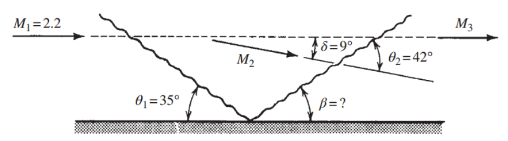
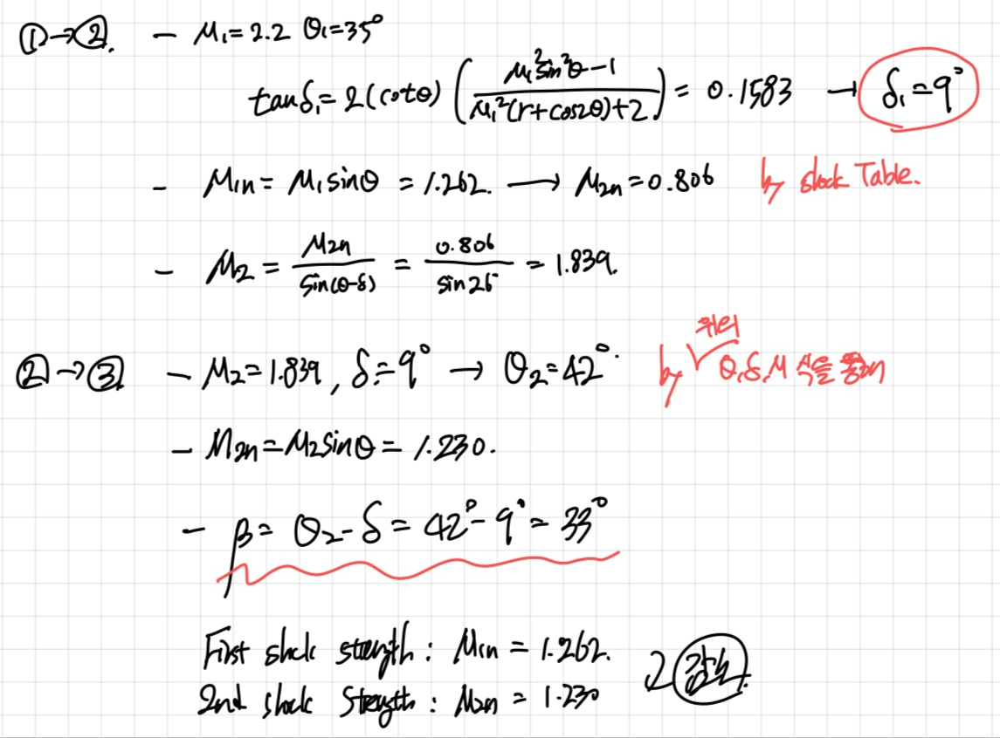
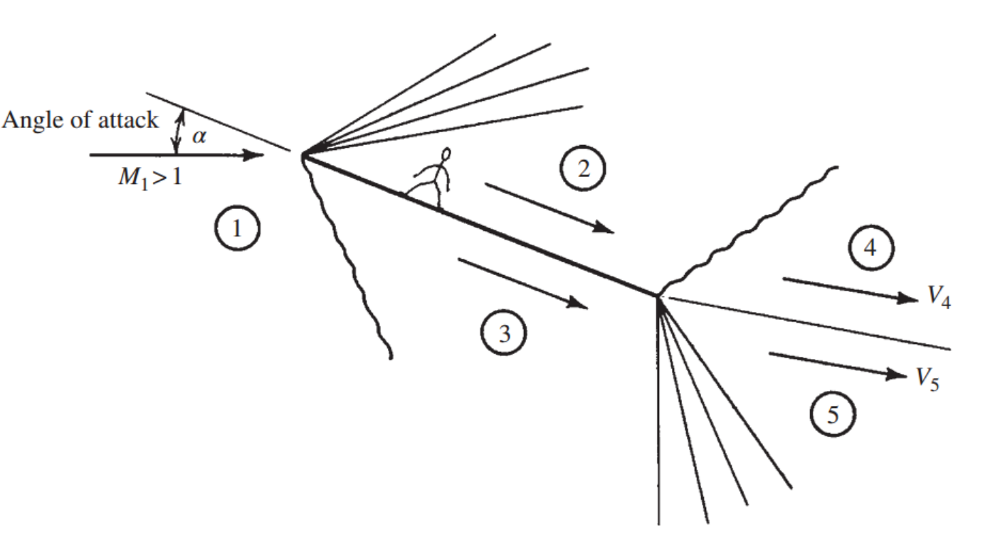
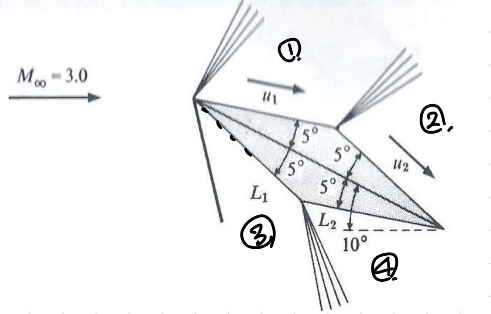
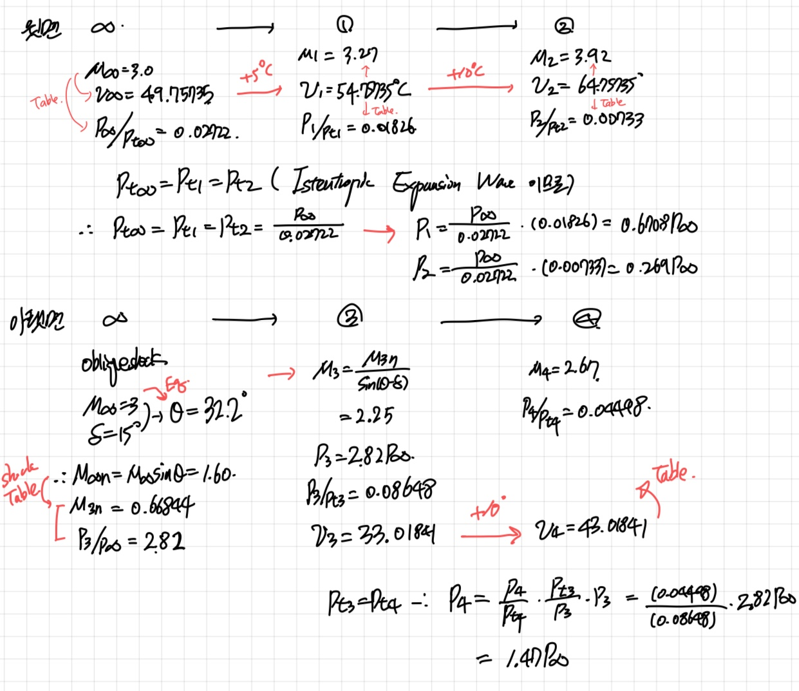
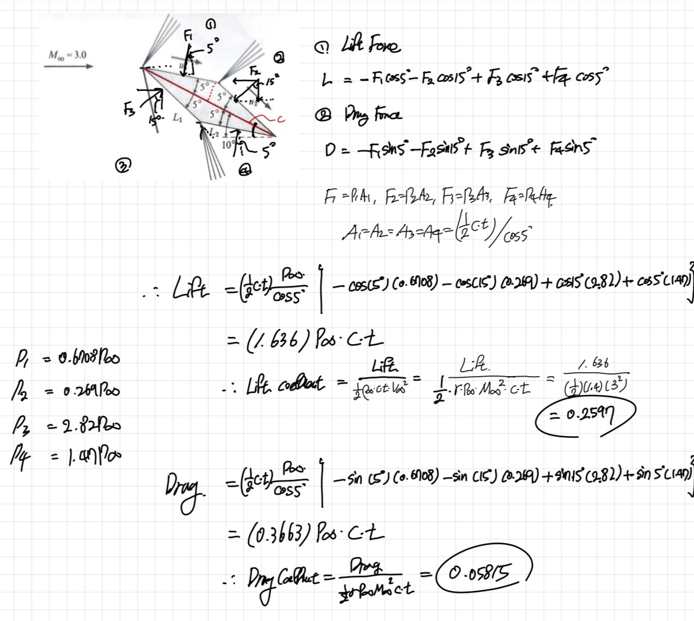

---
{
"layout": "note",
"title": "[Gas Dynamics] Ch 8 Prandtl-Meyer Flow - Application - Airfoil",
"journal": true,
"section": "Study",
"topic": "Gas Dynamics",
"excerpt": "[Gas Dynamics] Ch 8 Prandtl-Meyer Flow - Application - Airfoil Prantl-Meyer flow 마지막 Post입니다. 정말 여기서 끝낼께요 지금 실제 Oblique shock, Pra",
"classes": "wide",
"permalink": "/blog/mechanical-engineering/gas-dynamics/gas-dynamics-ch-8-prandtl-meyer-flow-application-airfoil/",
"study_area": "Mechanical",
"date": "2024-03-27",
"source_url": "https://jeffdissel.tistory.com/m/21",
"header": {
"teaser": "/blog/mechanical-engineering/gas-dynamics/gas-dynamics-ch-8-prandtl-meyer-flow-application-airfoil/images/img-001.png"
}
}
---
{% raw %}[Gas Dynamics] Ch 8 Prandtl-Meyer Flow - Application - Airfoil
Prantl-Meyer flow 마지막 Post입니다.
정말 여기서 끝낼께요
지금 실제 Oblique shock, Prandtl-Meyer flow가
언제 어디에서 어떻게 발생하는지 보고있고,
이전 포스터에서 1.Nozzle
이번포스터에서 남은 2.Wave reflection, 3. Airfoil 끝내겠습니다
2. Wave Reflection
예제 문제로 보면서 이해해 봅시다
Given:
Flow of Air
M1 = 2.2
θ1 = 35도
Q. beta?, Two shocks strength increase or decrease?


즉 Wave는 바닥면에 의해 Reflect 될수 있지만,
Shock Strength 는 감소 함을 알 수 있다.
3. Airfoil
마지막 Application 빠르게 살펴보고
Ch 8 종료 해봅시다.

Airfoil특징은 Sharp한 Edge가 무조건 있다는 것이다.
Moreover,
Angle of attack(유체와 비행기의 각도) > 0 인 경우가 발생한다.
이런 경우
Pradntl Expansion Wave
가 무조건 생긴다.
Region 1 -> 2
Sharp한 Edge에 유체의 방향 꺽여야 하므로
Pradntl Expansion Wave
P1 > P2 압력감소
Region 1 -> 3
Sharp한 Edge에 이번에는 벽면을 올라가는 식으로 꺽이므로
Oblique shock
P1 < P3 압력 증가
'P3 > P2 이므로
압력차이로 Airfoil 위로 올리는 Lift force 발생'
※ 급 질문.
Q. 왜? Prandtl Compression wave 아닐까?
Compression wave 는 Round한 연속적으로
deflection angle이 변하는 경우만 발생.
이후 Boudary condition 2가지를 만족 시켜야 한다.
1.V4 // V5
2. P4 = P5
이를 위해서는,
비교적 낮은 압력 P2는 압력을 상승 해야하고,
Reversly, 높은 압력 P3는 압력을 감소 해야함.
Therefore,
Region 2 -> 4
Oblique shock을 발생시켜
P2 < P4 압력 증가
Region 3 -> 5
Prandtl Expansion wave 발생
P3 > P5 압력 감소
이렇게 최종적으로 영역 4,5에서
속도의 방향이 같고, 압력이 같은 유체가 형성된다.
[마지막 예제 문제를 풀어보고 마무리 하겠습니다.]

Q. For the 2-D airfoil shown above Fig,
Compute the Lift and Drag coefficients for an angle of attack of 10 degrees.

면적항을 위해 폭을 t라고 하자.

{% endraw %}